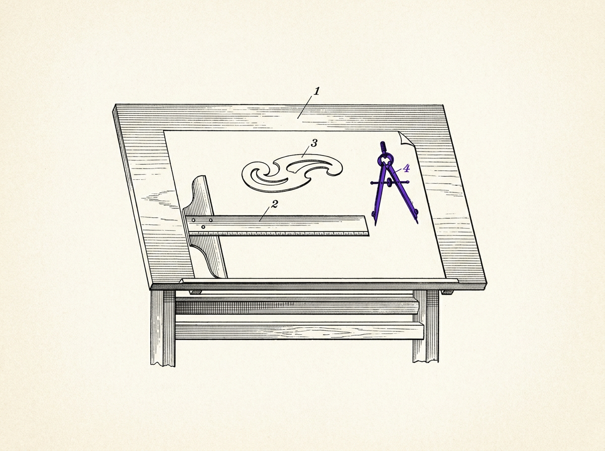

About
Research Mission
Research assistant, University of Oxford — Saïd Business School.
Peer-reviewed: one paper accepted at ADCAIJ (Advances in Distributed Computing and Artificial Intelligence Journal, Universidad de Salamanca, Vol. 15, 2026). Everything else on this site is a working paper, under review, in data collection, or openly retired — the failures record says which.
Research Mission
This is a research program, not a portfolio. It studies one recurring pattern: AI makes it cheap to produce a judgment — a forecast, a classification, a recommendation — and expensive, in a way that hasn't gotten cheaper, for an institution to actually authorize it. That gap shows up everywhere once you look for it: in how audit committees sign off on models they can't inspect, in how regulators are measured by proxies that don't hold up against their own data, in how a hiring model's fairness numbers survive contact with a real pipeline, in how a person weighs a machine's number differently than a person's.
The work spans institutional theory, formal queueing models, behavioral experiments, and applied machine learning audits — not because the questions are unrelated, but because the same underlying mechanism keeps showing up in different disciplinary clothing. A theory paper says authority migrates from substance to procedure. A queueing model says exactly when. A GitHub telemetry study says you can see it happen in ordinary operational data. None of these papers work alone; each is a different instrument pointed at the same phenomenon.
Why Institutions
Individual AI capability gets most of the attention. This program bets the more consequential story is institutional: not what a model can do, but what an organization can responsibly do with what it produces. An institution that cannot authorize its own AI outputs at the rate it produces them doesn't stop functioning — it adapts, usually by substituting the appearance of review for the substance of it. That adaptation is not a moral failure of any individual inside the institution. It is closer to a predictable, formally describable equilibrium. Naming that equilibrium precisely enough to model it, and to detect it from outside, is the throughline connecting the theory work to the queueing models to the audit papers.
How I Work
Every claim in this program is required to survive contact with a real number before it appears in a paper. That has meant killing a regulatory-debt thesis that didn't survive the SEC's own statistics, rebuilding a fairness-audit pipeline after a reviewer caught illustrative constants standing in for real model output, and re-running a metric's validation design after a self-audit found it was circular. The failures section on this site exists because that process — not the papers that survived it — is the actual research output worth being honest about.
See the full record →Tools: Python for formal modeling and simulation (queueing theory, Monte Carlo, discrete-event simulation); scikit-learn, CatBoost, and SHAP for the applied ML audits; structured coding rubrics with inter-rater reliability for the text-as-data work; and a shared open-source observatory — five metrics, public datasets, reserved replication slots — so the infrastructure outlives any one paper.
Principles
These aren't mottos — each one is here because I got it wrong first. The rule is what I do differently now.
- 01Keep the failures in. The regulatory-debt thesis died against the SEC's own data — so that failure, not a salvaged version of the claim, is what the paper reports.
- 02Trace every figure to a pipeline. A reviewer once caught illustrative constants standing in for real model output in a fairness audit; now no number reaches a figure unless it re-computes from raw data.
- 03Audit your own metric before a reviewer does. A self-audit found an oversight metric was validated against a process that shared its assumptions — circular — so I rebuilt the validation on non-circular data.
- 04Check the proxy against the primary record. Recomputing one SEC-oversight proxy against the regulator's own counts reversed its sign; I now pull the primary series before trusting any proxy.
- 05Build the infrastructure to outlive the paper. The five metrics and datasets are released so the next question doesn't rebuild the same scraping and provenance from scratch.

Research Timeline
How this program's threads opened, from applied ML audits to formal models to shared infrastructure.
Selected Influences
Herbert Simon
Bounded rationality as the starting point this program's central construct is built to succeed.
James March & the Carnegie School
Organizations as information-processing systems under constraint.
William Ocasio
The attention-based view of the firm.
Wanda Orlikowski
Sociomateriality; infrastructure as an active participant, not a backdrop.
John Meyer & Brian Rowan
Institutional decoupling between formal structure and actual activity.
Niklas Luhmann
Legitimacy through procedure.
Michael Power
The audit society; ritualized verification as an institutional response to complexity.
Ben Green & Madeleine Elish
Empirical critiques of human oversight and "moral crumple zones" in algorithmic systems.
J.F.C. Kingman & Ward Whitt
The queueing-theory foundations the formal models are built on.